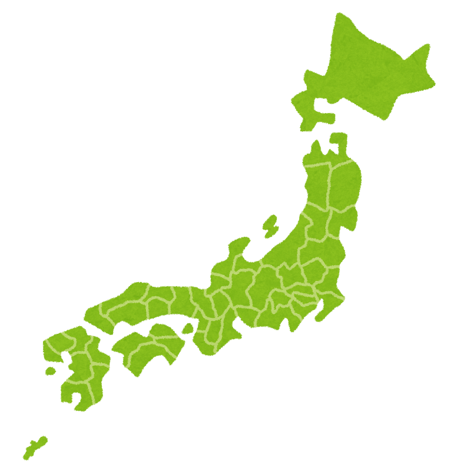

🇲🇾 Jalur Gemilang（ジャルル・グミラン）― マレー語で「栄光の縞」
📍 おすすめ観光スポット
🍜 おすすめグルメ
🌤️ ベストシーズン
年間を通して25〜32℃の常夏。地域によって雨季・乾季が異なります。
🗺️ 主要都市
🌍 基本データ
👤👤👤👤👤👤
1.25億人
3,350万人

37.8万km²

33万km²
ベストシーズン
マレーシアは年間を通して27〜29℃の常夏。地域によって雨季・乾季の時期が異なります。
色が濃いオレンジほど気温が高く、黄金色は比較的涼しい月です。
✅ ベスト：3〜9月（乾季）／ 雨季でもスコール程度で観光可能
✅ ベスト：11〜4月（西海岸の乾季） ／ 9〜10月は北東モンスーンの影響で雨多め
✅ ベスト：1〜5月（乾季・ダイビング最適） ／ 9〜11月は雨季で海が荒れやすい
💡 航空券が安い時期
6〜7月はLCCの航空券が安くなりやすい時期。1月中旬〜3月も比較的ねらい目。年末年始・GW・お盆は高騰するので要注意。
旅行費用の目安
費用の内訳
エアアジア・バティックエアが安い
5つ星でも1〜2万円台が多い
レストランでも1,000〜2,000円程度
タクシー初乗り約250円〜
有料でも入場料は安い
ホテル・カフェのWi-Fiは無料が多い
💡 節約ポイント
・両替は現地（空港の銀行）がレートが良い
・チップ不要（特別なサービス時のみ任意）
・屋台・フードコートで本格グルメが格安
・GrabアプリはタクシーよりAI安く安心
旅の実用情報
入国時の注意
📋 MDAC（デジタル入国カード）
マレーシア入国の3日前からオンライン登録が必要。子供も登録が必要。
URL: imigresen-online.imi.gov.my/mdac/main
持ち物チェック
・変換アダプター（BFタイプ）
・日焼け止め・サングラス
・折りたたみ傘（スコール対策）
・ポケットティッシュ（有料トイレ対策）
・常備薬（胃腸薬など）
・夏服が基本（薄手の長袖も）
・モスク入場時：肌の露出を避ける
・女性：スカーフ持参が便利
・冷房が強い室内用に1枚上着
・スマートカジュアルも1着あると◎
文化・マナー
現地交通ガイド
マレー語 旅行フレーズ集
| 日本語 | マレー語 / 読み方 |
|---|---|
| 👋 あいさつ | |
| こんにちは | Selamat siangスラマッ シアン |
| 元気ですか？ | Apa khabar?アパ カバル？ |
| 元気です。あなたは？ | Khabar baik. Awak?カバル バイク。アワッ？ |
| バイバイ | Selamat tinggalスラマッ ティンガル |
| 🙏 基本表現 | |
| ありがとう | Terima kasihトゥリマ カシ |
| ごめんなさい | Minta maafミンタ マーフ |
| 大丈夫 | Tidak apa-apaティダッ アパアパ |
| はい / いいえ | Ya / Tidakヤー / ティダッ |
| 👤 自己紹介 | |
| 名前は〜です | Nama saya ～ナマ サヤ ～ |
| 名前は何ですか？ | Siapa nama awak?シアパ ナマ アワッ？ |
| 🍽️ レストラン | |
| おいしい！ | Sedap!スダッ！ |
| あまり好きじゃない | Saya tak suka sangatサヤ タッ スカ サンガッ |
| おすすめは？ | Apa yang disyorkan?アパ ヤン ディショルカン？ |
| 辛い | Pedasプダス |
| 辛くない | Tidak pedasティダッ プダス |
| お会計お願いします | Boleh minta bil?ボレ ミンタ ビル？ |
| カード払い | Kad kreditカッ クレディッ |
| 現金 | Tunaiトゥナイ |
| 🛍️ ショッピング | |
| これ | Iniイニ |
| ください | Saya nak iniサヤ ナッ イニ |
| いくらですか？ | Berapa harga ini?ブラパ ハルガ イニ？ |
| 結構です | Tak nak, terima kasihタッ ナッ、トゥリマ カシ |
| 🗺️ 移動・観光 | |
| ここに行きたい | Saya nak pergi ke siniサヤ ナッ プルギ ク シニ |
| トイレどこですか？ | Di mana tandas?ディ マナ タンダス？ |
| 綺麗ですね！ | Cantik sekali!チャンティッ スカリ！ |
| 🔢 数字 | |
| 1〜5 | Satu・Dua・Tiga・Empat・Limaサトゥ・ドゥア・ティガ・エンパッ・リマ |
| 6〜10 | Enam・Tujuh・Lapan・Sembilan・Sepuluhエナム・トゥジュ・ラパン・スンビラン・スプル |
🃏 マレー語 単語カード
旅行前にフレーズをマスターしよう！
印刷できる単語カードを販売中。
マレーシア グルメ10選
マレーシア 観光地10選
🃏 マレー語 単語カードで旅を10倍楽しもう
現地で使える厳選フレーズを単語カードにまとめました。
旅行前にサクッとマスターできます。